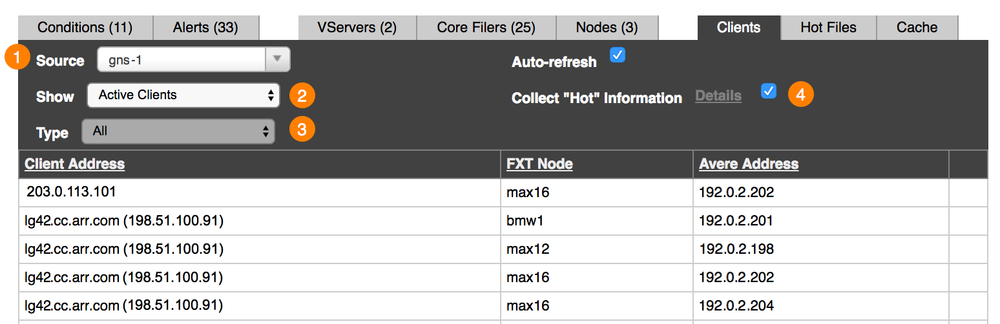
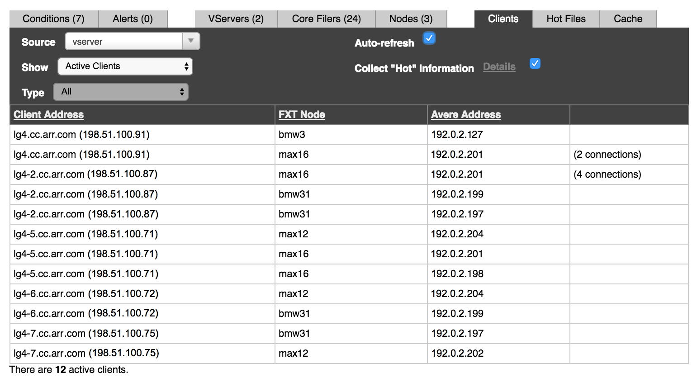
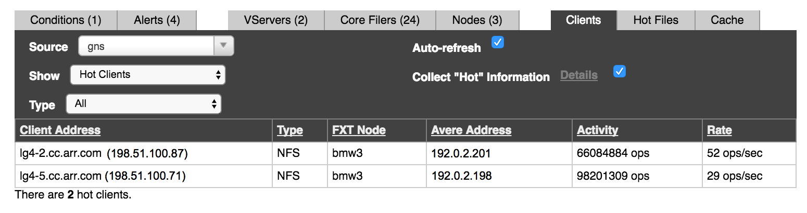
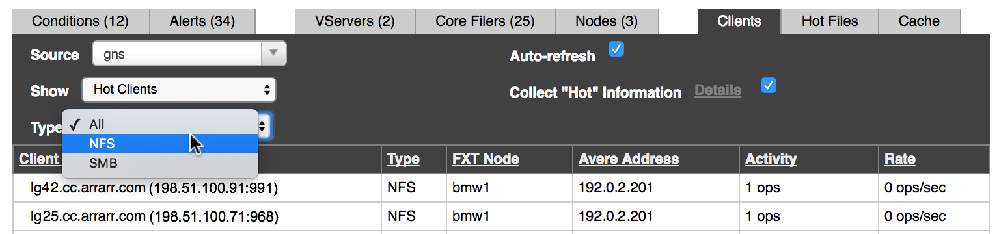

Clients Status Tab¶
The Clients tab shows information about clients that have been using the cluster. A wide variety of statistics can be shown, filtered by the control choices in the top of the table view.
{kind=link}
Leave the Auto-refresh option selected to continually update the data shown in the table.
As with other tables, you can sort the data by column headings. (Note that there is sometimes a lag of about one second to apply the sort after a heading was clicked.)
Filtering the Client List¶
Drop-down menu selectors at the top left of the clients tab control the data in the table. The Source (1), Show (2), and Type (3) options determine which clients and what statistics are shown.
“Source” Options¶
The Source selector (labeled 1 in the screenshot above) determines the scope of the clients shown.
You can select any of the cluster’s vservers, core filers, and nodes.
- If a vserver is selected, clients attached to that vserver are listed.
- If a core filer is selected, clients attached to that core filer through the Avere cluster are listed.
- If a node is selected, clients connecting through that node are listed.
“Show” Options¶
After selecting the source, you can select which subset of clients to view by using the Show control (2).
The options in the Show selector depend on what is selected in the Source setting.
Options for a VServer Source¶
These options appear on the Show menu when a vserver is selected on the Source menu.
Active Clients – This filter shows only clients that are currently connected to the cluster through this vserver. (Clients with an established TCP connection are considered to be active.)
Statistics shown in this view:
Client Address – The client’s IP address
FXT Node – The FXT node through which the client accesses the cluster
Avere Address – The address on the Avere cluster to which the client connects
Number of connections (if the same client has more than one active connection to this vserver)

{kind=link}
VServer Connection Information – This filter shows active clients for the vserver, but also includes statistics about how the client is connected to the vserver.
Statistics shown in this view:
- FXT Node – The FXT node through which the client accesses the cluster
- Client Address – The client’s IP address
- Avere Address – The address on the Avere cluster to which the client connects
- Protocol – The connection protocol (usually
tcp) - Connection Type – The type of connection between the client and the vserver (usually
nfs_frontendfor a client-vserver connection)
Hot Clients – If the Collect ‘Hot’ Information checkbox is selected, this view shows data about the most active clients connected to the vserver.
Read Hot Clients Reporting for a more complete discussion of this feature.
Statistics shown in this view:
Options for a Core Filer Source¶
One option appears on the Show menu when a core filer is selected on the Source menu:
Core Filer Connection Information – This filter shows active clients that are connected to the selected core filer through the Avere cluster.
Statistics shown in this view:
- FXT Node – The FXT node through which the client accesses the cluster
- Client Address – The client’s IP address
- Avere Address – The address on the Avere cluster to which the client connects
- Protocol – The connection protocol (usually
tcp) - Connection Type – The type of connection between the core filer and the client. The value varies, but common values for a hardware (NAS) core filer include
nfs_backend,nlm_backend, ormount_backend. With a cloud core filer, the connection type is typicallys3_https_backendors3_http_backend.
{kind=link}
Options for a Cluster Node Source¶
These options appear on the Show menu when a cluster node is selected on the Source menu:
Active Clients – Shows the clients actively using the cluster through this node. (Clients with an established TCP connection are considered to be active.)
Statistics shown in this view:
- Client Address – The client’s IP address
- VServer – The vserver through which the client connects
- Avere Address – The address on the Avere cluster to which the client connects
{kind=link}
VServer Connection Information – Shows specifics about how the active clients are connected to the cluster.
Statistics shown in this view:
- VServer – The vserver through which the client connects
- Client Address – The client’s IP address
- Avere Address – The address on the Avere cluster to which the client connects
- Protocol – The connection protocol (usually
tcp) - Connection Type – The type of connection between the client and the vserver (usually
nfs_frontend).
Core Filer Connection Information – Shows specifics about client connections to the core filers being used through this cluster node.
Each client might have multiple connections to the core filer, so it is possible to have hundreds of connections in this table.
Statistics shown in this view:
- Core Filer – The core filer that the client is using
- Client Address – The client’s IP address
- Avere Address – The address on the Avere cluster to which the client connects
- Protocol – The connection protocol (usually
tcp) - Connection Type – The type of connection between the client and the core filer. For a hardware (NAS) core filer, typical values are
nfs_backend,nlm_backend, ormount_backend; a cloud core filer frequently has the connection types3_https_backendors3_http_backend.
“Type” Options¶
The Type selector (3) allows you to filter clients by their connection protocol, SMB or NFS. Currently, this selector is active only for the vserver > hot clients view, described below in Hot Clients Reporting.
Hot Clients Reporting¶
The Hot Clients view shows usage and activity rate statistics for client machines that are the heaviest users of the Avere cluster.
When a vserver is selected as the Source on the clients tab, you can enable or disable hot client data collection and show information about the most active clients in the table.
Enabling Data Collection¶
To show hot clients information, you must turn on data collection for client activity. You can click the checkbox next to Collect ‘Hot’ Information on the clients tab to enable collection with default values. (This box can only be changed if a vserver source is selected.)
To change the data collection settings, click the Details link to go to the VServer Details settings page, as described below.
Note
Collecting hot client information uses CPU and memory resources on the cluster nodes. If you are not actively using this information, you can leave data collection disabled to improve cluster performance.
Details Link¶
Clicking the Details link loads the VServer Details settings page, where you can change settings for collecting hot client information. Options include:
- Enable or disable hot client data collection
- Set the maximum number of hot clients to track per cluster node
- Set the polling period for gathering client data
Read VServer > VServer Details in the Avere OS Configuration Guide for more information.
Showing Hot Clients¶
To see the most active clients, select a vserver from the Source menu and then select Hot Clients from the Show menu.
Hot Client Statistics¶
{kind=link}
The hot clients display shows standard client information (node, client address, and Avere cluster address), plus Type, Activity, and Rate.
- Client Address
- The client’s IP address
- Type
The client type, either SMB or NFS. You can filter by type in the hot clients view – use the Type selector above the table.
The Type selector is active only when Hot Clients is selected in the Show control.

{kind=link}
- FXT Node
- The FXT node through which the client accesses the cluster
- Avere Address
- The address on the Avere cluster to which the client connects
- Activity
The total number of operations sent from the client since the cluster started.
This number is re-read at the polling interval, and at that time a client might be removed from the hot clients list if it is not one of the most active clients. (The number of hot clients for each node is configurable and defaults to 10.)
The activity statistic is reset if the cluster restarts.
- Rate
- The current number of operations per second from this client. This value is continuously recalculated; it does not depend on the polling interval.
Although the polling interval does not affect the rate and activity statistics, it is used to determine the top n most active clients. When a new poll is done, a client might drop off the hot clients list or be added based on its Activity statistic.
The polling interval and the number of hot clients to track are configured on the VServer Details settings page. (Read VServer > VServer Details in the Avere OS Configuration Guide for more information.)